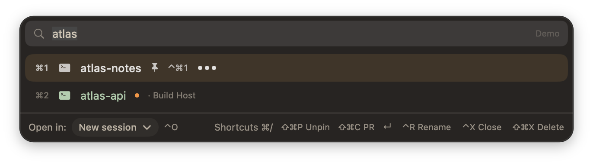
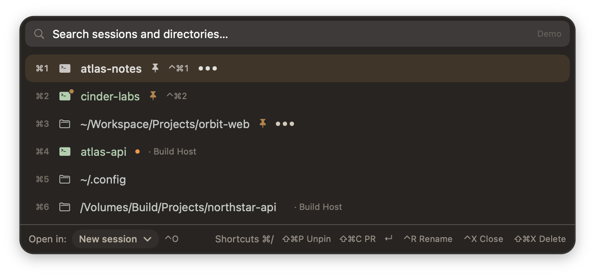
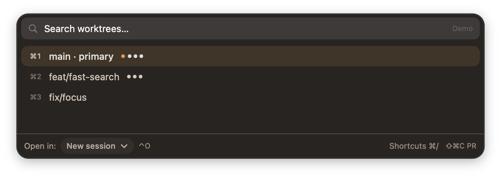
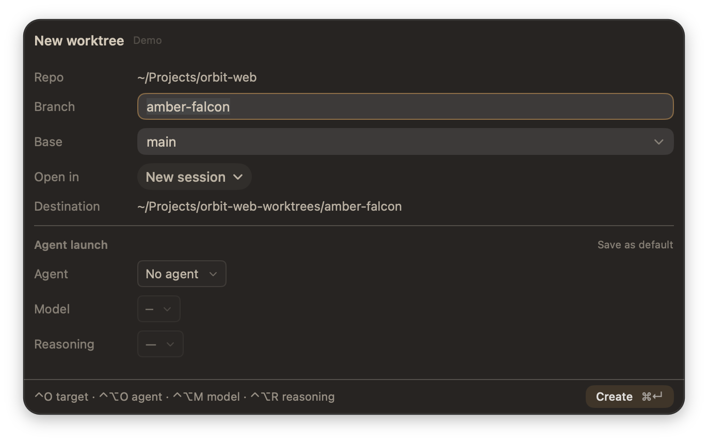
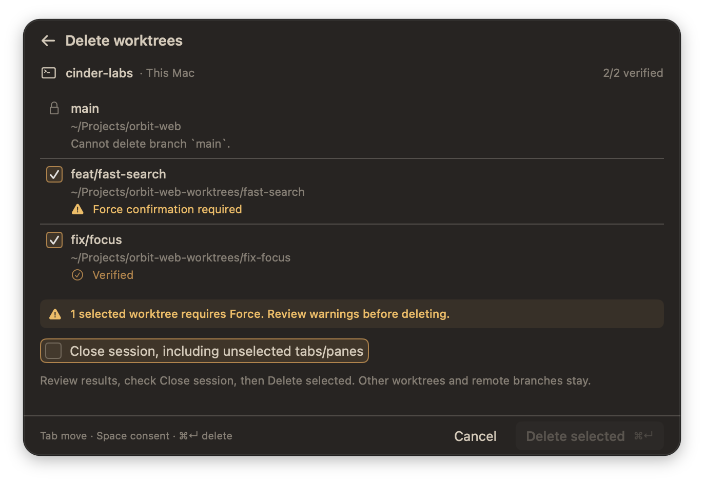
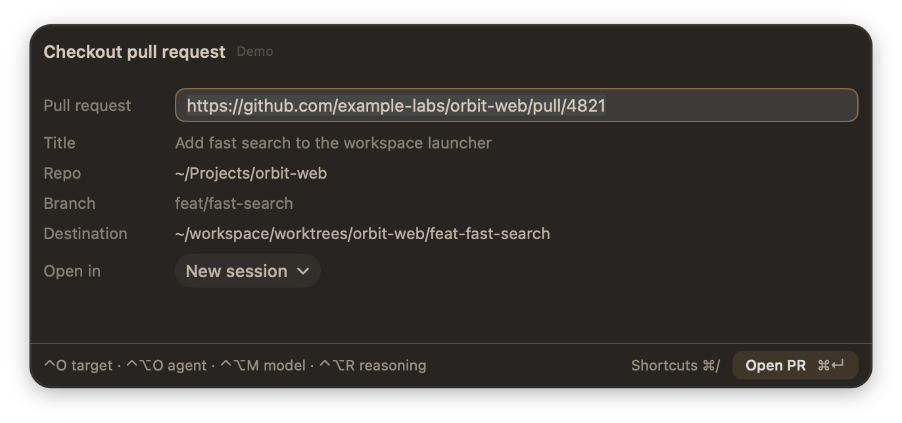

Fictional names and data, rendered with the demo backend. No live Rex sessions or Git worktrees were touched.

Filter open sessions and project directories, then open the selected result in a new session or another target.

Fixed shortcut slots make favorite sessions quick to reach across Rex.

Browse a repository’s primary checkout and its feature branches.

Preview the branch and destination, choose where to open it, and optionally launch an agent.

Review checks, primary checkout locks, and force warnings before confirming removal.

Preview a PR’s branch and destination before opening it in a session.
Choose the split direction from the keyboard.